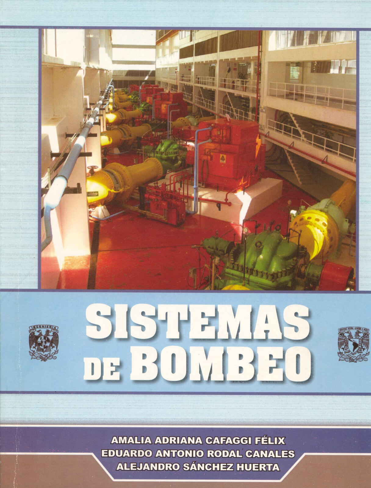

Publicaciones de la Facultad de Ingeniería, se presentan por autor en orden alfabético.
| Portada | Título | Autor |
|---|---|---|
|  | Sistemas de Bombeo Disponibilidad: B, AP. |
Amalia Adriana Cafaggi Félix Eduardo A. Rodal Canales Alejandro Sánchez Huerta |
 |
Disponibilidad: B, AP. |
Roberto Carvajal Rodríguez |
 |
Técnicas estadísticas en Hidrología Disponibilidad: B, AP. |
Carlos A. Escalante Sandoval Lilia Reyes Chávez |
 |
Presas Derivadoras Disponibilidad: B. |
Héctor García Gutiérrez |
 |
Diseño de una obra de desvio con Conductos en Túnel Disponibilidad: B, AP. |
Héctor García Gutiérrez |
 |
Apuntes de selección de Turbinas Hidráulicas Disponibilidad: B. | Héctor García Gutiérrez |
 |
Hidráulica de Canales Disponibilidad: B, AP. |
Humberto Gardea Villegas |
 |
Problemas de Examen de Hidráulica de Canales Disponibilidad: B, AP. Ejercicios |
Humberto Gardea Villegas |
 |
Problemas de Examen de Hidráulica de Máquinas y Fenómenos Transitorios Disponibilidad: B, AP. Ejercicios |
Humberto Gardea Villegas |
 |
Programa de Automatización de los Métodos Estadísticos en Hidrología Disponibilidad: B, AP. |
Ma.del Rosio Ruíz Urbano |
 |
Hidráulica de Canales Disponibilidad: B, AP.
|
Gilberto Sotelo Ávila |
| Apuntes de Hidráulica II | Gilberto Sotelo Ávila | |
 |
Diseño Hidráulico de Estructuras
Disponibilidad: B, AP. |
Gilberto Sotelo Ávila |
| Apuntes de Presas Derivadoras Disponibilidad: B, AP. | José M. Zamudio Morales | |
| SELECCIÓN Y DIMENSIONAMIENTO DE TURBINAS HIDRÁULICAS PARA CENTRALES HIDROELÉCTRICAS Disponibilidad: B, AP. | Héctor García Gutiérrez Arturo Nava Mastache |
|
| B:Para consulta en la biblioteca Antonio Dovalí Jaime
AP:De venta en el área de publicaciones de la Facultad de Ingeniería, CU |
||